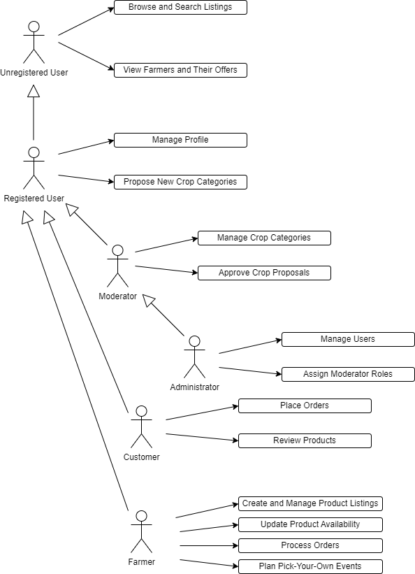
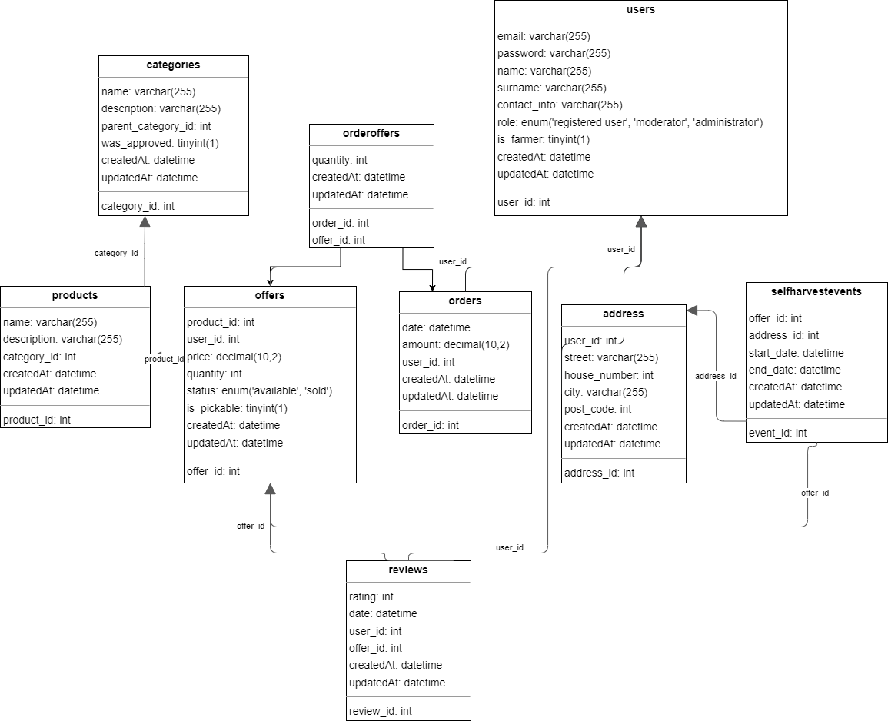

IIS Documentation
Authors
- Anastasiia Chumachenko xchuma00@stud.fit.vutbr.cz Database management, CSS for every single page, formatting and editing of front-end pages.
- Nadzeya Antsipenka xantsi00@stud.fit.vutbr.cz Creating most of the routes for linking the frontend and backend, creating pages and logic for processing user interaction.
- Nestor Baraniuk xbaran21@stud.fit.vutbr.cz Creating models, routes, middleware, creating pages and implementing user interaction logic.
Links
- Frontend: https://frontend-rc79.onrender.com - home page of IS
- Backend: https://backend-4g4p.onrender.com - only shows server status
Test Users
The table with testing accounts:
| User Role |
Login |
Password |
| Administrator |
admin@gmail.com |
Admin |
| Moderator |
moderator@gmail.com |
Moderator |
| Farmer |
farmer@gmail.com |
Farmer |
| Customer |
customer@gmail.com |
Customer |
There are 3 roles: Administrator, Moderator and Registered User. Every user can be a Farmer, they have to mark corresponding checkbox during registration and fill address

Database

Implementation
The frontend and backend of our project are two self-existent parts.
Backend
Backend's purpose is to process all API calls from
frontend and to work with database.
The backend is implemented using Node.js with Express.js as the framework.
It uses Sequelize ORM to interact with a MySQL database.
Models represent database tables, and associations define relationships between them.
To authenticate the user, we used JWT, which are generated by the backend and passed to the frontend.
Certain routes require this token, so frontend passes them back in headers. In fact, most of the backend code is models and routes.
Each model (table) has its own route. Thus, the route for orders is responsible for user orders, and the route for product reviews is responsible for product reviews.
But in fact, routes have more complex logic and act as controllers. They validate the input data and can work with several tables, according to the call.
Routes for interacting with database use Sequelize methods.
To enable communication with frontend, we used CORS.
Backend is deployed as Node.js application on Render, and it listens for all requests from the frontend.
Frontend
The frontend is implemented using React (with Vite used for building).
Basically, it is a user interface for interacting with the system, which communicates with the backend if needed.
For user navigation between pages we used react-router-dom.
For each page we implemented a state logic that shows and hides certain parts of the page, depending on the user's action and role.
We used React useState and useEffect hooks for that and axios library for all API requests.
The tokens generated by the backend are stored in LocalStorage, so the user remains logged in after the site is closed.
But user still needs to log in again after the token itself expires.
Installation
- Install Node.js
- Set up MySQL database
Backend Configuration
- Unzip the project folder.
- Move to the backend folder
cd backend
- Install required dependencies:
npm install
- Create a
.env file in the backend folder with the following content:
MYSQL_HOST='Host'
MYSQL_USER='Username'
MYSQL_PASSWORD='Pass'
MYSQL_DB='databaseName'
JWT_SECRET=SomeSecretKey
- Run the backend server:
npm run app
- If you need to initialize the database (drop and recreate tables), use:
npm run init-db
or
npm run init-and-fill
which will add 4 default users to the database.
Frontend Configuration
- Move to the frontend folder
- Install required dependencies:
npm install
- Start the development server:
npm run dev
- Open the provided URL in browser (should be
http://localhost:5173).
Note: ensure the backend is running before starting the frontend.
Known issues
We have not added different types of quantity measures (“units/kg”).
We have not added the ability to compare prices and filter offers by them.